Le génie génétique constitue l’une des principales avancées scientifiques du XXe siècle en génétique et en biologie moléculaire. Il désigne un ensemble de techniques utilisées pour manipuler les gènes des organismes vivants. Ces techniques permettent aux scientifiques d’améliorer ou de modifier les caractéristiques d’un organisme. Les domaines d’application du génie génétique sont très variés : l’agronomie, la santé, l’industrie et même la recherche scientifique.
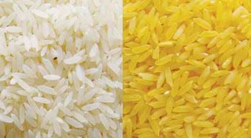
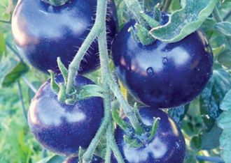
En 2016, la surface mondiale des cultures d’OGM a atteint 185,1 millions d’hectares selon l’ISAAA (Service international pour l’acquisition d’applications agricoles biotechnologiques), organisme international de promotion des OGM.
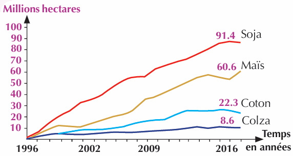
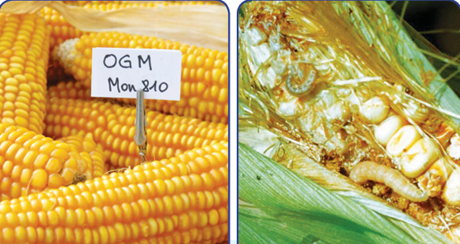
Dans la nature, les micro-organismes sont en permanence en contact avec la faune et la flore. Dans le sol, ils peuvent infecter les végétaux et échanger du matériel génétique avec eux. Ces végétaux deviennent alors génétiquement modifiés et acquièrent de nouvelles caractéristiques génétiques.
Quelles conséquences ce transfert de matériel génétique peut-il avoir sur les plantes ?
La galle du collet est une maladie des plantes causée par la bactérie Agrobacterium tumefaciens (At), qui entraîne la formation d’une tumeur au site d’infection. Cette bactérie est attirée par les substances chimiques libérées par les plantes blessées. Au niveau de la blessure, At peut se fixer aux cellules de la plante. À la suite de ce contact, ces cellules végétales se multiplient considérablement, donnant naissance à une tumeur. Celle-ci est généralement localisée au collet (zone de transition entre la tige et la racine), d’où le nom de cette formation : galle du collet.
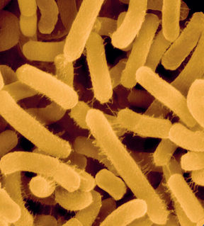
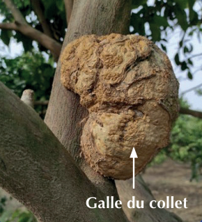
Les cellules de la galle libèrent dans l’environnement des composés chimiques spécifiques : les opines. Les bactéries Agrobacterium présentes dans le sol, à proximité de la galle, sont capables de se multiplier grâce aux opines.
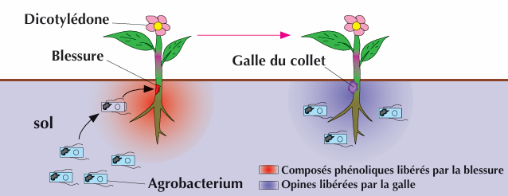
Les bactéries At possèdent, en plus de l’ADN contenu dans le chromosome bactérien (de grande taille), de petites molécules d’ADN de forme circulaire appelées plasmides.
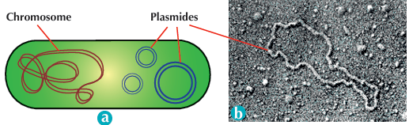
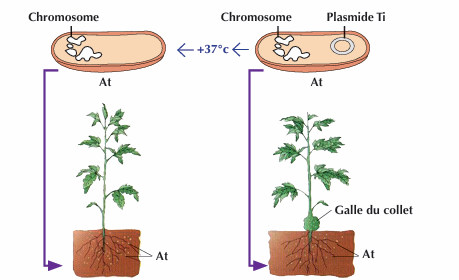
1. La galle du collet est une maladie des plantes causée par la bactérie Agrobacterium tumefaciens (At). Elle se manifeste par la formation d’une tumeur (galle) au niveau du collet (zone entre les racines et la tige). Elle se forme à la suite d’une blessure ou d’un stress subi par la plante (porte d’entrée de la bactérie, attirée par les composés phénoliques libérés par la blessure). À l’échelle cellulaire, la galle résulte d’une prolifération cellulaire anormale (divisions incontrôlées), d’où sa croissance progressive ; ses cellules libèrent des opines.
2. Les At privées de plasmides ne provoquent pas de galle, alors que les At normales en provoquent : l’agent responsable de la tumeur est donc le plasmide Ti (Tumor-inducing). L’infection commence par le transfert d’un fragment d’ADN (ADN-T) du plasmide Ti de la bactérie vers le génome des cellules végétales, où il s’intègre à l’ADN nucléaire. Cet ADN contient des gènes qui :
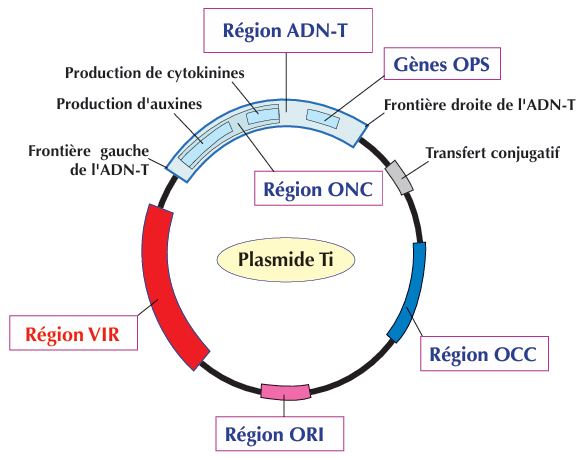
At possède un plasmide appelé plasmide Ti. Lorsqu’une blessure se produit au collet d’une plante, la bactérie entre en contact avec une cellule végétale et y transfère un fragment du plasmide Ti (l’ADN-T). Cet ADN-T s’intègre à l’ADN de la cellule végétale. Les gènes portés par l’ADN-T s’expriment alors dans la cellule et conduisent à la synthèse, par les cellules tumorales, de deux types de substances : l’auxine (et les cytokinines), hormones de croissance dont la surproduction entraîne une multiplication incontrôlée des cellules végétales, et les opines, une source de nutriments pour At. La bactérie utilise les opines comme source de carbone, d’azote et d’énergie pour sa croissance et sa multiplication.
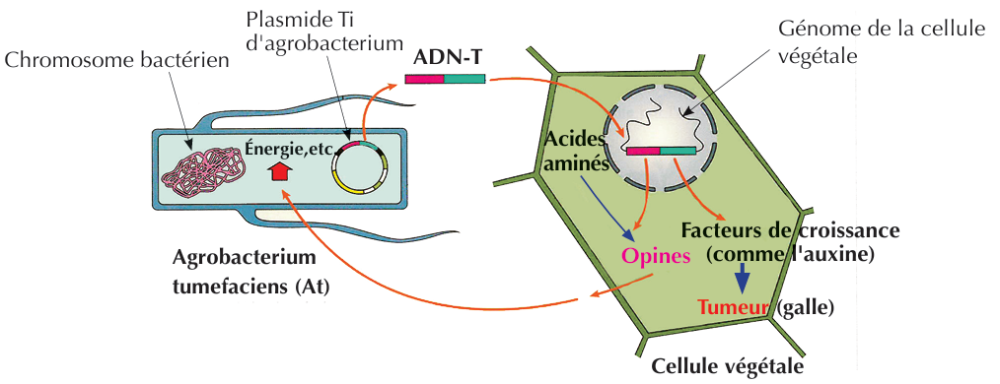
Le développement des biotechnologies a permis des avancées considérables dans la manipulation des gènes, offrant de nouvelles possibilités dans des domaines comme la médecine, l’agriculture et l’environnement. Cette manipulation des gènes repose sur l’utilisation d’outils et de techniques de plus en plus sophistiqués.
Quels sont les outils et les techniques utilisés en génie génétique ?
Pour transférer le ou les gène(s) d’intérêt, il faut d’abord les localiser puis les isoler. Le génie génétique a recours à différentes techniques :
Il est possible de trouver un gène particulier à l’aide d’une sonde d’ADN. Une sonde d’ADN est une courte séquence complémentaire de la région cible du gène que l’on cherche à localiser. La sonde est souvent marquée par un élément visible ou détectable, comme un radio-isotope (élément radioactif). Ce marquage permet de visualiser ou de détecter la sonde une fois qu’elle s’est liée à l’ADN cible : une autoradiographie peut être utilisée pour visualiser le gène recherché.
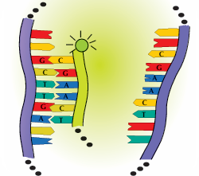
L’enzyme de restriction reconnaît une séquence spécifique de l’ADN (site de restriction) et coupe les deux brins à deux endroits légèrement décalés. La coupure donne alors des extrémités simple brin, ou extrémités cohésives, qui peuvent établir des liaisons hydrogène avec les bases complémentaires d’autres fragments d’ADN coupés par la même enzyme (fig 2).
| Enzyme | Source | Séquence reconnue | Coupure |
|---|---|---|---|
| EcoRI | Escherichia coli | 5’ GAATTC 3’ 3’ CTTAAG 5’ | 5’…G|AATTC…3’ 3’…CTTAA|G…5’ |
| BamHI | Bacillus amyloliquefaciens | 5’ GGATCC 3’ 3’ CCTAGG 5’ | 5’…G|GATCC…3’ 3’…CCTAG|G…5’ |
| HindIII | Haemophilus influenzae | 5’ AAGCTT 3’ 3’ TTCGAA 5’ | 5’…A|AGCTT…3’ 3’…TTCGA|A…5’ |
| MstII | Microcoleus sp. | 5’ CCTNAGG 3’ 3’ GGANTCC 5’ | 5’…CC|TNAGG…3’ 3’…GGANT|CC…5’ |
| TaqI | Thermus aquaticus | 5’ TCGA 3’ 3’ AGCT 5’ | 5’…T|CGA…3’ 3’…AGC|T…5’ |
La transcriptase inverse est une enzyme qui permet de synthétiser de l’ADN à partir d’ARN. Cette technique est souvent utilisée pour obtenir de l’ADN complémentaire (ADNc) à partir de l’ARNm correspondant à la protéine que l’on veut produire, ce qui permet d’isoler des gènes exprimés dans une cellule sans passer par l’ADN génomique (fig 3).
Remarque : les ADN ligases sont des enzymes qui relient (soudent) des fragments d’ADN possédant des extrémités cohésives complémentaires, en rétablissant les liaisons phosphodiester entre leurs nucléotides.
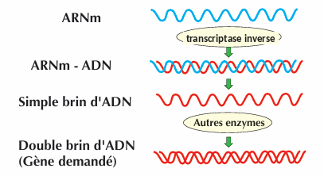
1. Les sondes nucléotidiques sont de courtes séquences d’ADN ou d’ARN (généralement simple brin) conçues pour être complémentaires d’une séquence cible : elles permettent d’identifier la présence d’un gène spécifique, de rechercher des gènes impliqués dans des maladies génétiques…
Les enzymes de restriction permettent de couper l’ADN à des endroits précis, ce qui est essentiel pour : insérer un gène dans un plasmide ; créer un ADN recombinant ; modifier ou supprimer un gène ; créer des plantes ou des animaux transgéniques. Les enzymes de restriction sont les « ciseaux moléculaires » de la biologie moléculaire : sans elles, la manipulation de l’ADN serait impossible à ce niveau de précision.
2. La transcriptase inverse copie l’ARNm de la protéine que l’on souhaite produire artificiellement en ADN complémentaire (ADNc) :
Les vecteurs sont des éléments conçus pour transporter et insérer des gènes dans des cellules cibles, souvent à des fins de modification génétique. Il existe plusieurs types de vecteurs de gènes. Leur rôle est de :
– transporter le gène d’intérêt (ou un autre type de matériel génétique) dans la cellule cible ;
– contribuer au maintien et à la stabilisation de l’ADN étranger dans la cellule hôte.
Lorsque le vecteur est introduit dans les cellules hôtes, celles-ci subissent plusieurs divisions, ce qui permet la production en grande quantité de l’ADN inséré (clonage ou amplification).
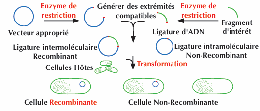
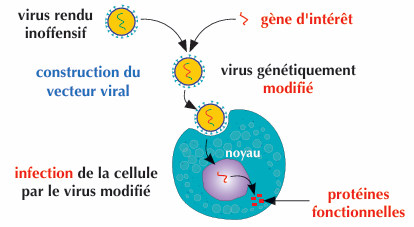
| Type de vecteur | Définition | Intérêt |
|---|---|---|
| Vecteur viral | Virus modifié utilisé pour transférer un gène dans une cellule. Le virus a été rendu inoffensif, mais il garde sa capacité à infecter les cellules et à y introduire du matériel génétique. | Plus adapté à la thérapie génique ou au transfert stable dans les cellules animales et humaines, surtout quand on veut que le gène soit exprimé durablement. |
| Plasmide vecteur | Petit ADN circulaire (souvent d’origine bactérienne) utilisé pour introduire un gène dans une cellule, en particulier en bactériologie ou en biologie moléculaire. | Utilisé surtout en laboratoire, pour le clonage ou dans les bactéries, quand on n’a pas besoin d’une intégration dans le génome. |
Les techniques de transfert direct d’ADN désignent les méthodes utilisées pour introduire de l’ADN dans des cellules sans l’aide de vecteurs biologiques (comme les plasmides ou les virus).
L’électroporation consiste à appliquer aux cellules un champ électrique de haute intensité, ce qui provoque la formation de pores temporaires dans la membrane cellulaire. Ces pores permettent à l’ADN de pénétrer dans la cellule.
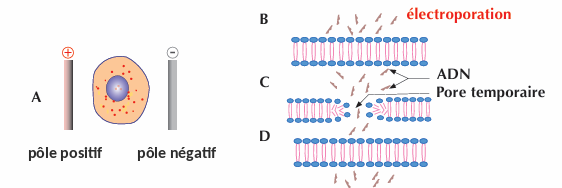
Les sondes radioactives sont des molécules d’ADN simple brin contenant des atomes radioactifs, dont la séquence est complémentaire de celle d’une partie du gène étudié.
Le schéma ci-contre illustre les étapes du criblage à l’aide de sondes radioactives.
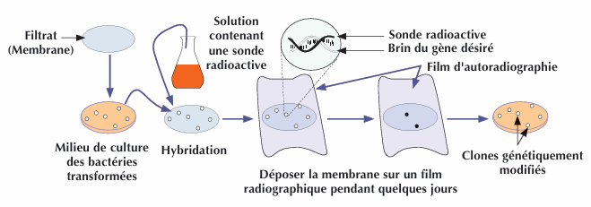
1. L’électroporation permet d’introduire de l’ADN (ou d’autres molécules) dans des cellules à l’aide d’une impulsion électrique. Elle fonctionne sur de nombreux types cellulaires (cellules bactériennes, animales, végétales, levures) et reste utile même pour des cellules difficiles à transformer par d’autres méthodes. Le protocole est simple et rapide (quelques minutes).
2. Le criblage permet d’identifier efficacement, parmi un grand nombre de candidats, les cellules ou les clones qui possèdent une caractéristique génétique ou phénotypique d’intérêt. Il permet de sélectionner les cellules ou organismes transformés avec succès (ex. : porteurs du gène inséré, repérés par hybridation avec la sonde radioactive puis autoradiographie) ou ayant une propriété particulière (ex. : production d’une protéine, résistance à un antibiotique…).
Le génie génétique est un domaine de la biotechnologie qui permet de modifier l’ADN d’un organisme pour lui conférer de nouvelles caractéristiques ou de nouvelles fonctions. La transgenèse est une technique du génie génétique qui consiste à introduire dans un organisme un gène provenant d’un autre organisme, souvent d’une espèce différente. Cette technologie a conduit à des avancées majeures dans divers secteurs, de la médecine à l’agriculture.
Comment la transgenèse permet-elle la production d’hormones humaines et l’amélioration de la qualité et de la productivité de certaines plantes ? Quels sont les enjeux soulevés par l’utilisation de cette technologie ?
L’insuline est une hormone produite par le pancréas. Aujourd’hui, les diabétiques ont accès à de l’insuline humaine produite par génie génétique. Face à l’augmentation constante du nombre de cas de diabète, il était nécessaire de trouver une méthode pour produire de l’insuline en grande quantité et à moindre coût. Avec le développement du génie génétique, l’Homme s’est tourné vers les micro-organismes. Depuis 1984, la production commerciale d’insuline à grande échelle est réalisée grâce à la bactérie E. coli génétiquement modifiée. En 1987, on a également commencé à produire de l’insuline avec la levure Saccharomyces cerevisiae.
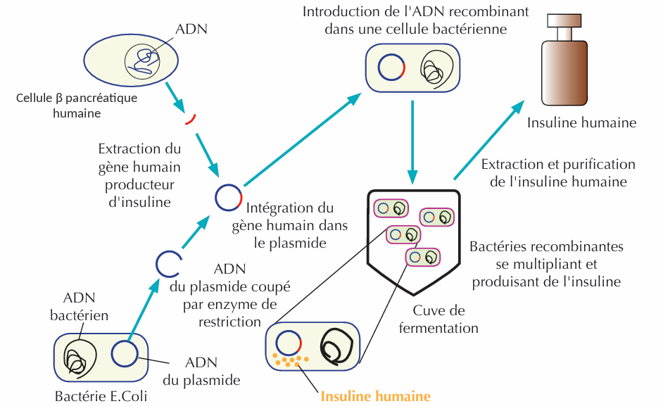
La pyrale du maïs (Ostrinia nubilalis) est un insecte ravageur qui peut causer des dégâts importants au maïs conventionnel. Les chenilles de la pyrale creusent des galeries dans les tiges et les épis, affaiblissant la plante et réduisant le rendement. De plus, ces galeries peuvent favoriser le développement de bactéries et de champignons pathogènes, entraînant une baisse de la qualité des grains.
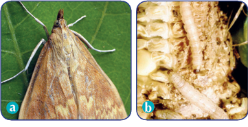
Bacillus thuringiensis (Bt) est une bactérie (fig 3) présente naturellement dans le sol, qui produit des protéines insecticides (toxines Cry). La modification génétique du maïs pour produire ces protéines toxiques, spécifiquement contre des insectes nuisibles (pyrale du maïs), repose sur l’intégration dans le génome du maïs de gènes de Bt qui contrôlent la synthèse de ces protéines. Ces gènes sont généralement insérés dans les cellules du maïs soit par transformation biologique à l’aide d’Agrobacterium tumefaciens, soit par transfert direct à l’aide d’un canon à particules (fig 4).
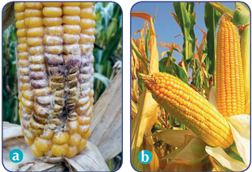
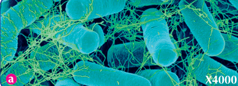
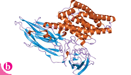
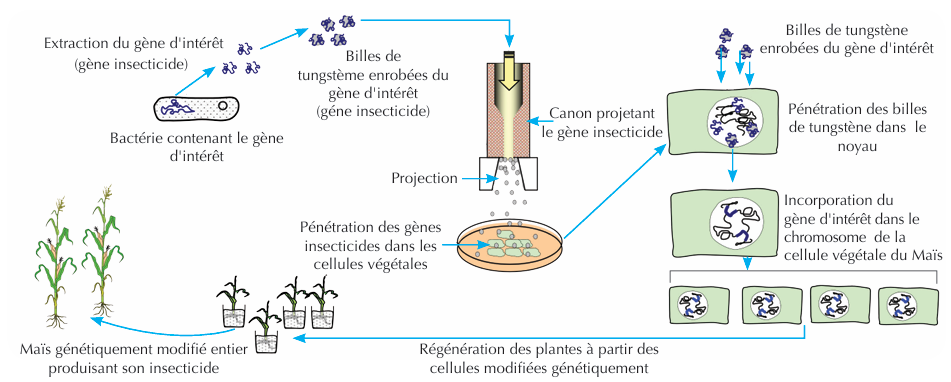
1. Étapes de la modification génétique du maïs :
2. La modification génétique du maïs pour produire des protéines insecticides comme la toxine Bt est une méthode plus ciblée, plus écologique et efficace à long terme, alors que les traitements classiques aux pesticides, s’ils sont mal encadrés, polluent tout l’écosystème et sont coûteux.
Opinion sur les OGM (exemples d’arguments) :
| Arguments en faveur des OGM | Arguments contre une utilisation non encadrée des OGM |
|---|---|
| – Amélioration des rendements agricoles ; – réduction de l’usage des pesticides ; – sécurité alimentaire : meilleure productivité (possibilité de nourrir plus de personnes), OGM enrichis (ex. : riz doré enrichi en bêta-carotène, précurseur de la vitamine A) ; – avancées en médecine, avec une évaluation scientifique rigoureuse et un accès équitable aux technologies pour toutes les nations. |
– Risques d’effets non prévus sur l’environnement (pollinisation croisée, impact sur les espèces non ciblées) ; – dépendance des agriculteurs aux semences commerciales brevetées ; – méfiance du public, souvent liée à un manque de transparence ou de compréhension. |
Conclusion : les OGM sont des outils puissants qui peuvent avoir des bénéfices majeurs pour l’agriculture, la santé et l’environnement, mais ils doivent être utilisés avec prudence, transparence et dans un cadre réglementaire strict. Le débat ne devrait pas être « pour ou contre », mais « comment, pourquoi et pour qui » utiliser les OGM.
| Avantages de la transgenèse | Inconvénients de la transgenèse |
|---|---|
|
|
La transgenèse offre des opportunités pour améliorer la production alimentaire, la nutrition et les soins de santé. Cependant, elle nécessite une régulation stricte, des études approfondies et une transparence accrue pour minimiser les risques et répondre aux préoccupations éthiques et environnementales.